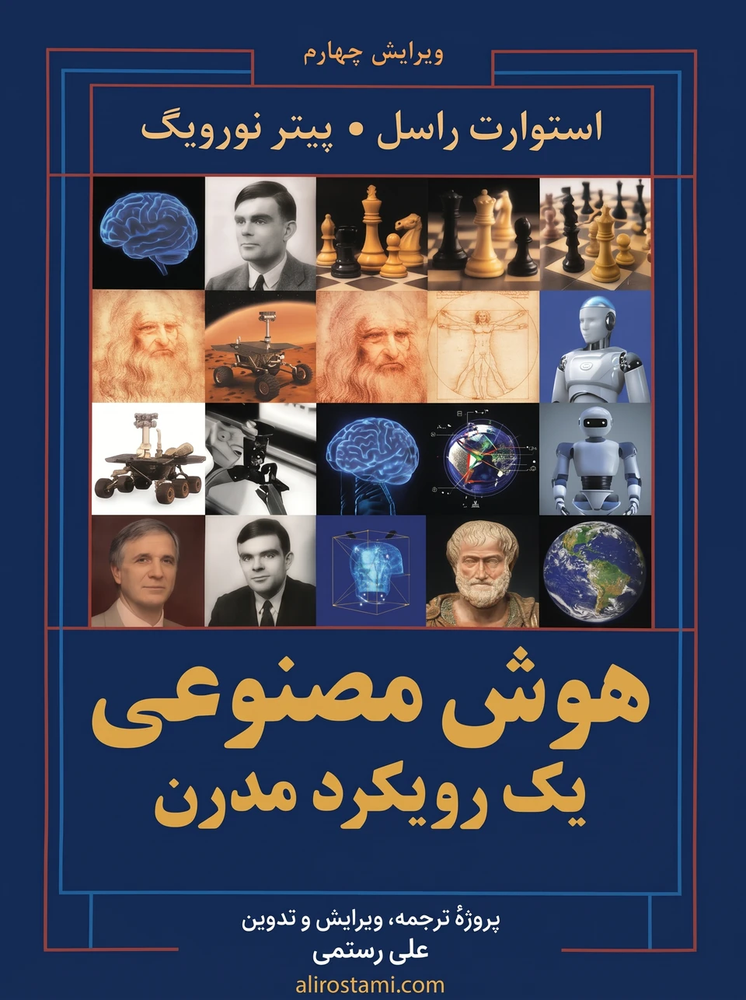

پیشگفتار
حمایت از پروژه
اگر این پروژه برای یادگیری هوش مصنوعی برای شما مفید بوده است، میتوانید با حمایت از آن به ادامهٔ ترجمه، تکمیل، بهروزرسانی و نگهداری این مجموعه کمک کنید. حمایت شما، چه مالی و چه با معرفی پروژه به دیگران، باعث میشود بتوانم زمان بیشتری برای توسعه و بهبود این کار اختصاص دهم.
حمایت از پروژه:
https://www.alirostami.com/support/
مخزن پروژه در GitHub:
https://github.com/alirostami01/aima-4e-persian
برای لوی، گوردون، لوسی، جورج و آیزاک — اس. جی. آر.
(S.J.R.)
برای کریس، ایزابلا و جولیت — پی. ان.
(P.N.)
هوش مصنوعی (Artificial Intelligence) رشتهای بزرگ است و این هم کتابی بزرگ. ما کوشیدهایم تمام پهنهٔ این رشته را بکاویم: از منطق، احتمال و ریاضیات پیوسته گرفته تا ادراک، استدلال، یادگیری و کنش؛ از انصاف، اعتماد، خیر اجتماعی و ایمنی؛ و از کاربردهایی که از ریزدستگاههای الکترونیکی تا رباتهای کاوشگر سیارهای و خدمات آنلاین با میلیاردها کاربر را در بر میگیرد.
عنوان فرعی این کتاب «رویکردی نوین» است؛ یعنی ما تصمیم گرفتهایم داستان را از چشمانداز امروز روایت کنیم. آنچه امروز شناخته شده است را در چارچوبی واحد تلفیق میکنیم و کارهای اولیه را با کمک ایدهها و اصطلاحاتی که امروز رایجاند بازآفرینی میکنیم. از کسانی که بهسبب همین رویکرد، زیرشاخهشان کمتر قابلشناسایی باقی مانده، پوزش میخواهیم.
تازههای این ویرایش
این ویرایش، تغییرات هوش مصنوعی را از زمان آخرین ویرایش (۲۰۱۰) بازتاب میدهد:
- بهدلیل در دسترس بودن بیشتر دادهها، منابع محاسباتی و الگوریتمهای تازه، تمرکز ما بیشتر بر یادگیری ماشین (Machine Learning) است تا مهندسی دانش دستساخته.
- یادگیری عمیق (Deep Learning)، برنامهنویسی احتمالاتی (Probabilistic Programming) و سامانههای چندعاملی (Multiagent Systems) پوشش گستردهتری یافتهاند و هر کدام فصل مستقل خود را دارند.
- پوشش فهم زبان طبیعی، رباتیک و بینایی رایانهای بازبینی شده تا تأثیر یادگیری عمیق را بازتاب دهد.
- فصل رباتیک اکنون شامل رباتهایی است که با انسان تعامل میکنند و نیز کاربرد یادگیری تقویتی در رباتیک.
- پیشتر هدف هوش مصنوعی را چنین تعریف کرده بودیم: ساخت سامانههایی که میکوشند مطلوبیتِ مورد انتظار (Expected Utility) را بیشینه کنند، جایی که اطلاعات مطلوبیتِ مشخص — یعنی هدف — را طراحان انسانیِ سامانه تعیین میکنند. اکنون دیگر فرض نمیکنیم که هدف ثابت است و سامانهٔ هوش مصنوعی آن را میداند؛ بلکه سامانه ممکن است دربارهٔ اهداف واقعیِ انسانهایی که به نمایندگی از آنها کار میکند نااطمینان داشته باشد. سامانه باید یاد بگیرد چه چیزی را بیشینه کند و حتی در حالی که دربارهٔ هدف نامطمئن است، بهدرستی عمل کند.
- پوشش تأثیر هوش مصنوعی بر جامعه را افزایش دادهایم، از جمله مسائل حیاتی اخلاق، انصاف، اعتماد و ایمنی.
- تمرینها را از پایان هر فصل به یک پایگاه اینترنتی منتقل کردهایم. این کار به ما امکان میدهد پیوسته تمرینها را گسترش دهیم، بهروز کنیم و بهبود بخشیم تا نیازهای مدرسان را برآورده و پیشرفتهای رشته و ابزارهای نرمافزاری مرتبط با هوش مصنوعی را بازتاب دهیم.
- در مجموع، حدود ۲۵٪ از مطالب کتاب کاملاً تازه است و ۷۵٪ باقیمانده تا حد زیادی بازنویسی شده تا تصویری یکپارچهتر از رشته ارائه دهد. ۲۲٪ از ارجاعهای این ویرایش به آثاری است که پس از ۲۰۱۰ منتشر شدهاند.
مرور کلی کتاب
مضمون اصلیِ یکپارچهکننده، ایدهٔ عامل هوشمند (Intelligent Agent) است. ما هوش مصنوعی را مطالعهٔ عواملی تعریف میکنیم که از محیط، ادراک حسی (Percept) دریافت میکنند و کنش انجام میدهند. هر عامل تابعی را پیادهسازی میکند که توالیهای ادراک حسی را به کنشها نگاشت میکند و ما شیوههای گوناگون بازنمایی این توابع را پوشش میدهیم: عاملهای واکنشی، برنامهریزهای بیدرنگ، سامانههای تصمیمگیری و سامانههای یادگیری عمیق. ما بر یادگیری تأکید میکنیم؛ هم بهمثابه روشی برای ساخت سامانههای شایسته و هم بهعنوان راهی برای گسترش دسترسی طراح به محیطهای ناشناخته. رباتیک و بینایی را نه مسئلههایی مستقل، بلکه خدمتگزار دستیابی به هدفها میدانیم. بر اهمیت محیطِ تکلیف در تعیین طراحی مناسب عامل تأکید داریم.
هدف نخستین ما انتقال ایدههایی است که در هفتاد سال گذشتهٔ پژوهش هوش مصنوعی و دو هزارهٔ کارهای مرتبط پیش از آن پدید آمدهاند. کوشیدهایم در ارائهٔ این ایدهها از صورتگرایی بیش از حد بپرهیزیم و در عین حال دقت را حفظ کنیم. فرمولهای ریاضی و الگوریتمهای شبهکد را گنجاندهایم تا ایدههای کلیدی عینی شوند؛ مفاهیم و نمادهای ریاضی در پیوست الف و شبهکدهای ما در پیوست ب شرح داده شدهاند. این کتاب در درجهٔ نخست برای درسهای کارشناسی یا یک رشتهدرس توالیدار طراحی شده است.
کتاب ۲۸ فصل دارد و هر فصل تقریباً به اندازهٔ یک هفته تدریس است؛ بنابراین گذر از کل کتاب به یک دورهٔ دوترم نیاز دارد. در یک دورهٔ یکترمه، مدرس میتواند با توجه به علاقهٔ خود و دانشجویان فصلهایی را برگزیند. کتاب در درسهای تحصیلات تکمیلی نیز (احتمالاً با افزودن برخی منابع اصلی پیشنهادی در یادداشتهای کتابشناختی) یا برای خودآموزی و بهعنوان مرجع قابل استفاده است.
در سراسر کتاب، نکتههای مهم با آیکون مثلثی در حاشیه مشخص شدهاند.
◮ هر جا اصطلاح تازهای تعریف میشود، در حاشیه هم ثبت شده است. کاربردهای مهم بعدی اصطلاح با حروف ضخیم آمده، اما در حاشیه تکرار نشده است. ما فهرست راهنمای جامع و کتابنامهٔ مفصلی گنجاندهایم. تنها پیشنیاز، آشنایی با مفاهیم پایهٔ علوم رایانه (الگوریتم، ساختمان داده، پیچیدگی) در سطح سال دوم کارشناسی است. حساب دیفرانسیل و جبر خطی سال اول نیز برای برخی موضوعات مفید است.
منابع آنلاین
منابع آنلاین از طریق pearsonhighered.com/cs-resources یا در پایگاه وب کتاب به نشانی aima.cs.berkeley.edu در دسترساند. در آنجا خواهید یافت:
- تمرینها، پروژههای برنامهنویسی و پروژههای پژوهشی. اینها دیگر در پایان هر فصل نیستند و فقط آنلایناند. در متن کتاب به یک تمرین آنلاین با نامی مانند «تمرین 6.NARY» اشاره میکنیم. دستورالعملهای پایگاه وب به شما امکان میدهد تمرینها را بر اساس نام یا موضوع پیدا کنید.
- پیادهسازی الگوریتمهای کتاب به زبانهای پایتون، جاوا و زبانهای برنامهنویسی دیگر (اکنون در github.com/aimacode میزبانی میشود).
- فهرستی از بیش از ۱۴۰۰ مرکز آموزشی که از کتاب استفاده کردهاند، بسیاری با پیوند به مواد درسی و برنامهٔ درسی آنلاین.
- مواد تکمیلی و پیوندهایی برای دانشجویان و مدرسان.
- دستورالعمل گزارش خطاهای کتاب — چون به احتمال زیاد برخی خطاها وجود دارند.
جلد کتاب

جلد، وضعیت پایانی بازی ششمِ دیدار شطرنج ۱۹۹۷ را نشان میدهد؛ همان بازی سرنوشتساز که در آن برنامهٔ دیپبلو (Deep Blue) گری کاسپاروف (که سیاه بازی میکرد) را شکست داد و این نخستین باری بود که رایانهای قهرمان جهان را در یک مسابقهٔ شطرنج میباخت. کاسپاروف در بالای تصویر دیده میشود. سمت راست او، وضعیتی کلیدی از بازی دومِ دیدار تاریخی گو (Go) میان قهرمان سابق جهان، لی سدول، و برنامهٔ آلفاگو (AlphaGo) از دیپمایند (DeepMind) است. حرکت ۳۷ آلفاگو، قرنها سنت شکننده در گو را زیر پا گذاشت و کارشناسان انسانی بلافاصله آن را اشتباهی شرمآور دانستند؛ اما معلوم شد حرکتی برنده است. در گوشهٔ بالا-چپ، ربات انساننمای اطلس (Atlas) ساختهٔ بوستون داینامیکس (Boston Dynamics) دیده میشود. تصویری از یک خودروی خودران که محیطش را حس میکند، میان آدا لاولیس — نخستین برنامهنویس رایانهٔ جهان — و آلن تورینگ قرار دارد؛ همان که کار بنیادینش هوش مصنوعی را تعریف کرد. در پایین صفحهٔ شطرنج، یک ربات مریخنورد اکتشافی و مجسمهای از ارسطو دیده میشود؛ ارسطو پیشگام مطالعهٔ منطق بود و الگوریتم برنامهریزی او از کتاب «در جنبش جانوران» (De Motu Animalium) پشت نام نویسندگان نقش بسته است.
پشت صفحهٔ شطرنج، یک مدل برنامهنویسی احتمالاتی قرار دارد که سازمان معاهدهٔ منع جامع آزمونهای هستهای سازمان ملل متحد از آن برای شناسایی انفجارهای هستهای از روی سیگنالهای لرزهای استفاده میکند.
سپاسگزاریها
ساخت یک کتاب، روستای جهانی میطلبد. بیش از ۶۰۰ نفر بخشهایی از کتاب را خواندند و پیشنهادهای بهبود ارائه کردند. فهرست کامل در aima.cs.berkeley.edu/ack.html است؛ از همهٔ آنان سپاسگزاریم. در اینجا جا برای یادکرد تنها چند همکار بهویژه مهم است. نخست نویسندگانِ همکار:
- جودیا پرل (بخش 13.5، شبکههای علّی)؛
- ویکاش مانسینگکا (بخش 15.3، برنامهها بهمثابه مدلهای احتمالاتی)؛
- مایکل وولدریج (فصل ۱۸، تصمیمگیری چندعاملی)؛
- یان گودفلو (فصل ۲۱، یادگیری عمیق)؛
- جیکوب دولین و مِی-وینگ چانگ (فصل ۲۴، یادگیری عمیق برای زبان طبیعی)؛
- جیتیندرا مالیک و دیوید فورسایت (فصل ۲۵، بینایی رایانهای)؛
- آنکا دراگان (فصل ۲۶، رباتیک).
و سپس برخی نقشهای کلیدی:
- سینتیا یونگ و مالیکا کانتور (مدیریت پروژه)؛
- جولی ساسمن و تام گالوی (ویراستاری و پیشنهادهای نگارشی)؛
- عماری استیونز (تصویرسازی)؛
- تریسی جانسون (ویراستار)؛
- ارین آلت و رز کرنان (جلد و تبدیل رنگ)؛
- نالین چیبر، سم گوتو، ریموند دِ لازاک، راوی موهان، کیاران اوریلی، آمیت پاتل، دراگومیر رادیو و سماگرا شارما (توسعهٔ کد آنلاین و راهنمایی)؛
- دانشجویان گوگل سامر آو کد (توسعهٔ کد آنلاین).
استیوارت میخواهد از همسرش، لوی شفلوت، برای شکیبایی بیپایان و خرد بیکرانش سپاسگزاری کند. او امیدوار است گوردون، لوسی، جورج و آیزاک بهزودی و پس از آنکه او را بهخاطر این همه سال کار بر کتاب بخشیدند، آن را بخوانند. «راگز» (RUGS، گروه غیرمعمولِ دانشجویی راسل) مثل همیشه غیرمعمولانه یاریرسان بودهاند.
پیتر میخواهد از پدر و مادرش (تورستن و گردا) برای آغاز راه، و از همسرش (کریس)، فرزندانش (بلا و جولیت)، همکاران، رئیس و دوستانش برای تشویق و تحمل او در ساعات طولانی نوشتن و بازنویسی سپاسگزاری کند.
دربارهٔ نویسندگان
استیوارت راسل در ۱۹۶۲ در پورتسموث انگلستان زاده شد. مدرک کارشناسی با درجهٔ ممتاز در فیزیک را در ۱۹۸۲ از دانشگاه آکسفورد و دکترای علوم رایانه را در ۱۹۸۶ از استنفورد گرفت. سپس به هیئت علمی دانشگاه کالیفرنیا در برکلی پیوست؛ جایی که استاد و رئیس سابق گروه علوم رایانه، مدیر مرکز هوش مصنوعی سازگار با انسان (Center for Human-Compatible AI) و دارندهٔ کرسی مهندسی اسمیت–زاده است. در ۱۹۹۰ جایزهٔ پژوهشگر جوانِ رئیسجمهوری از بنیاد ملی علوم و در ۱۹۹۵ بهطور مشترک جایزهٔ رایانه و اندیشه (Computers and Thought Award) را دریافت کرد. او عضو انجمن هوش مصنوعی آمریکا (AAAI)، انجمن ماشینهای محاسباتی (ACM) و انجمن آمریکایی پیشبرد علوم (AAAS)، عضو افتخاری کالج وادهام آکسفورد و عضو اندرو کارنگی است. از ۲۰۱۲ تا ۲۰۱۴ کرسی بلز پاسکال را در پاریس در اختیار داشت و بیش از ۳۰۰ مقاله در گسترهٔ وسیعی از موضوعات هوش مصنوعی منتشر کرده است. دیگر کتابهای او عبارتاند از: «کاربرد دانش در قیاس و استقرا»، «کار درست را بکن: مطالعاتی در عقلانیت محدود» (با اریک وفالد) و «انسانسازگار: هوش مصنوعی و مسئلهٔ کنترل».
پیتر نورویگ اکنون مدیر پژوهش در گوگل است و پیشتر مدیر بخش الگوریتمهای جستجوی وب بود. او یک دورهٔ کلاس آنلاین هوش مصنوعی را با ۱۶۰٬۰۰۰ دانشجو تدریس کرد و به راهاندازی موج کنونی دورههای آزاد انبوه آنلاین (MOOC) کمک کرد. او رئیس بخش علوم محاسباتی در مرکز پژوهشی ایمزِ ناسا بود و بر پژوهش و توسعه در هوش مصنوعی و رباتیک نظارت داشت. کارشناسی ریاضیات کاربردی از دانشگاه براون و دکترای علوم رایانه از برکلی دارد. در دانشگاه کالیفرنیای جنوبی استاد و در برکلی و استنفورد عضو هیئت علمی بوده است. او عضو انجمن هوش مصنوعی آمریکا، انجمن ماشینهای محاسباتی، فرهنگستان هنر و علوم آمریکا و فرهنگستان علوم کالیفرنیا است. دیگر کتابهای او عبارتاند از: «الگوهای برنامهنویسی هوش مصنوعی: مطالعههای موردی در لیست مشترک (Common Lisp)»، «وربوموبیل: یک سامانهٔ ترجمه برای گفتگوی رودررو» و «سامانههای کمک هوشمند برای یونیکس».
این دو نویسنده در ۲۰۱۶ نخستین دورهٔ جایزهٔ معلم برجستهٔ AAAI/EAAI را بهطور مشترک دریافت کردند.